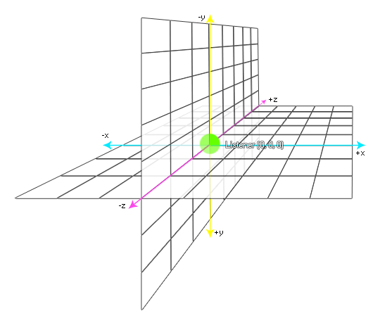
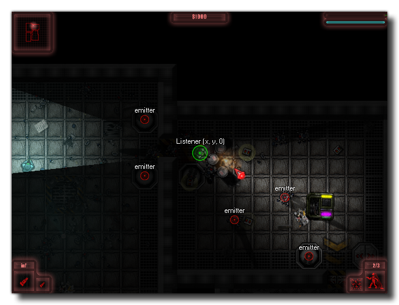

Mit dieser Funktion können Sie die Position des Hörers im 3D-Audioraum ändern. Das folgende Beispielbild zeigt die Standardposition für den Listener im Audioraum: 
HINWEIS: Wenn Sie mehrere Listener haben, sollten Sie die Funktion verwenden audio_listener_set_position.Wie Sie sehen können, ist die Standardposition (0, 0, 0), aber normalerweise würden Sie diese Funktion benutzen, um den Zuhörer mit dem Spielerobjekt innerhalb Ihres Spiels zu bewegen und so die Art und Weise zu ändern, wie der Ton von Emittern vom Spieler gehört wird. Im Bild unten eines Top-Down-Spiels setzt die Player-Instanz zum Beispiel den Listener, was dazu führt, dass das Audio von den verschiedenen Emittern "verändert" wird, wenn sich der Spieler auf der Ebene bewegt: 
audio_listener_position(x, y, z);
| Streit | Beschreibung |
|---|---|
| x | Die x-Position des Listeners (Standard 0). |
| y | Die y-Position des Listeners (Standard 0). |
| z | Die z-Position des Listeners (Standard 0). |
N/A
if speed > 0
{
audio_listener_position(x, y, 0);
}
Der obige Code überprüft, ob die Geschwindigkeit der Player-Instanz über 0 liegt, und wenn dies der Fall ist, wird der Audio-Listener auf die aktuelle x / y-Position aktualisiert.